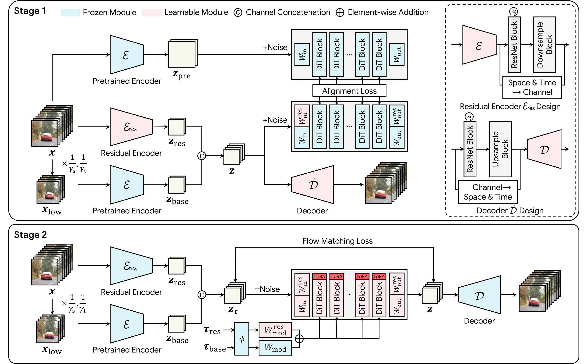

Think of an editor who already reads a writer's full drafts fluently. Instead of inventing a new shorthand, you hand the editor a short summary in the writer's own style plus a margin note with the missing details. You check the shorthand by whether the editor understands it, not by whether it copies the draft word for word, and the editor reads the summary first, then the notes.
작가의 원고를 이미 술술 읽는 편집자가 있다고 하자. 새 약어 체계를 만드는 대신 작가 문체 그대로 쓴 짧은 요약과 빠진 내용을 적은 여백 메모를 건넨다. 이 요약이 좋은지는 원고를 글자 그대로 옮겼는지가 아니라 편집자가 알아듣는지로 판단하고, 편집자는 요약을 먼저 읽은 뒤 메모를 읽는다.
How it works: base, residual, and the DiT as judge작동 방식은 기반 잠재, 잔차 잠재, 그리고 심판 역할의 DiT
Most of the pipeline stays frozen; only the residual path, decoder, and light DiT adapters train. That is why adaptation costs 38.5 GPU days instead of a retrain.
파이프라인 대부분은 고정되고 잔차 경로, 디코더, 가벼운 DiT 어댑터만 학습한다. 그래서 처음부터 다시 학습하지 않고 GPU 38.5일로 적응이 끝난다.

- Split the latent in two.잠재를 둘로 나눈다.The frozen Wan2.1 encoder sees a 2× smaller, 2× sparser video; a residual encoder adds the lost detail and motion.고정된 Wan2.1 인코더는 2배 작고 2배 성긴 영상을 보고, 잔차 인코더가 잃어버린 세부와 움직임을 채운다.
- Align inside the DiT.DiT 안에서 맞춘다.Noised old and new latents pass through the frozen DiT; the first 10 of 40 blocks must match.노이즈를 섞은 기존 잠재와 새 잠재를 고정된 DiT에 넣고, 40개 블록 중 앞 10개의 특징이 같아지게 한다.
- Denoise the base first.기반을 먼저 디노이즈한다.The base runs at a lower noise level in the same forward pass, so sampling cost does not change.같은 순전파 안에서 기반을 더 낮은 노이즈 수준으로 돌리므로 샘플링 비용은 그대로다.
Key idea: judge the latent by the generator, not the pixels핵심은 픽셀이 아니라 생성기로 잠재를 평가하는 것
DiT-feature alignment adds the biggest jump in prompt following. The semantic score passes the uncompressed model once the new latent speaks the DiT's language.
DiT 특징 정렬이 프롬프트 반영 점수를 가장 크게 끌어올린다. 새 잠재가 DiT의 언어로 말하게 되자 의미 점수가 압축 전 모델을 넘는다.
Results: same score, a fraction of the time같은 점수를 훨씬 짧은 시간에
GRACE is the fastest Wan-based pipeline at 480p. It needs half the tokens of DC-Gen, which adapts the same DiT.
GRACE는 480p에서 Wan 기반 파이프라인 중 가장 빠르다. 같은 DiT를 적응시킨 DC-Gen보다 토큰이 절반이다.
The best reconstruction is not the best generator. GRACE ranks fourth on PSNR but first on VBench-I2V among the compressed latents.
복원을 가장 잘하는 쪽이 생성도 가장 잘하지는 않는다. GRACE는 압축 잠재 중 PSNR이 4위지만 VBench-I2V는 1위다.
| Autoencoder | Tokens | PSNR | VBench-I2V |
|---|---|---|---|
| Wan2.1-VAE (before) | 32.8k | 35.15 | 87.92 |
| Step-Video-VAE | 17.2k | 33.88 | 84.05 |
| Video DC-AE | 8.2k | 34.61 | 84.94 |
| LTX-VAE | 4.3k | 31.97 | 87.06 |
| Single-latent baseline | 4.3k | 33.76 | 86.44 |
| GRACE-VAE | 4.3k | 32.63 | 87.90 |
When you compress anything that feeds a frozen pretrained model, measure the loss in that model's feature space rather than in pixels. The consumer's view of the distribution matters more than raw fidelity.고정된 사전학습 모델에 들어갈 입력을 압축할 때는 픽셀이 아니라 그 모델의 특징 공간에서 손실을 재자. 원본 충실도보다 받아쓰는 모델이 보는 분포가 더 중요하다.
Small faces, sign text, and thin structures often break at 480p, which a VBench total does not isolate. All evidence comes from one model family (Wan2.1) and one main benchmark, and each new pipeline needs its own 8.5 GPU-day autoencoder run.480p에서는 작은 얼굴, 간판 글씨, 얇은 구조가 자주 깨지는데 VBench 총점만으로는 이를 따로 볼 수 없다. 근거가 모두 모델 한 계열(Wan2.1)과 주요 벤치마크 하나에서 나왔고, 새 파이프라인마다 오토인코더를 GPU 8.5일씩 다시 학습해야 한다.